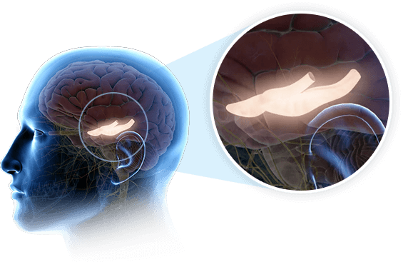

The Genius Song Review 2026: 7-Minute Brainwave Audio, Benefits, Price, Bonuses and Official Access
A detailed buyer-focused guide to The Genius Song, a short brainwave audio program promoted for focus, creativity, clear thinking and daily mental reset.

Quick Product Summary
What Is The Genius Song?
The Genius Song is a digital brainwave audio program promoted as a short daily listening experience for people who want a calmer, more focused and more creative mental state. Instead of asking users to take capsules, follow a complicated course, or spend hours in meditation, the product is positioned around a simple audio track that can be played with headphones from a phone, tablet, laptop, or desktop. The official presentation describes the core idea as a 7-minute listening ritual designed to support a focused mental environment through sound-based brainwave stimulation.
For readers of MoonE News, the best way to understand this product is to think of it as a digital self-improvement audio program. It is not a medical treatment, it is not a school course, and it is not a productivity app with dozens of buttons. The main value is the promise of simplicity: access the audio, listen consistently, and use the session as a daily reset for focus, creativity, learning and clear thinking.
The sales message around the product talks heavily about gamma brainwave activity, creativity, intuition, flow state and the idea that many people lose touch with their natural creative spark as they get older. Whether a buyer approaches that language from a scientific, spiritual or personal-development point of view, the practical product is still straightforward: you receive access to a short audio-based program and use it as part of your routine. That makes it attractive for people who want a low-effort tool that does not require a large lifestyle change.
Why This Audio Program Is Getting Attention
The reason The Genius Song stands out is not only because it is an audio product. Many meditation tracks, focus playlists and binaural beat videos already exist online. The difference is in the way this product frames the experience. It connects the listening ritual to the idea of unlocking a more creative mental state, sometimes described in its promotional material as activating the brain’s dormant genius wave. That is a strong claim, so a smart buyer should look at it carefully, but it also explains why the product has become interesting to people who follow personal development, manifestation, focus tools and digital wellness trends.
Another reason it catches attention is the time commitment. A product that asks for only a few minutes per day feels easier to try than a full training course. Many people know they should meditate, journal, study, plan and exercise, but they do not always follow through because the routine feels too heavy. A 7-minute audio session has a much lower barrier. That is why the product may appeal to students, online workers, creators, entrepreneurs, parents and anyone who wants a simple mental reset without needing to learn a new system.
The offer also includes a strong digital-product advantage: instant access. Buyers do not need to wait for shipping. There is no bottle to run out, no physical product to store, and no complicated setup. After purchase, access details are provided online, which makes it especially suitable for people who prefer downloadable programs and want to start quickly.
How The Genius Song Is Designed To Work
The Genius Song is built around the idea that sound can influence mental state. The broader category is often discussed through terms like brainwave entrainment, frequency-based audio, binaural beats and focused listening. In simple words, the user listens through headphones and allows the audio pattern to guide the mind into a more relaxed, alert, creative or focused state. The product’s marketing connects this to gamma wave activity, which is often associated in popular neuroscience discussions with learning, attention and high-level information processing.
The important point is that the program is not asking the user to force concentration. It is designed to be passive and easy. You do not need to solve puzzles while listening. You do not need special equipment beyond headphones. You do not need to sit in a perfect meditation pose. The recommended approach is to find a quiet moment, play the audio, stay consistent, and allow the session to become a repeated mental cue for focus and clarity.
For someone who already uses music to work, pray, study, relax or get into a creative mood, this concept will feel familiar. The difference is that The Genius Song is packaged as a purposeful, short session rather than background music. That makes it easier to use as a ritual: listen before work, before writing, before studying, before planning the day, or whenever the mind feels scattered.
The Main Problem It Tries To Solve
Modern life is noisy. Phones, notifications, short videos, stress, deadlines and constant information make it difficult to stay mentally clear. Many people sit down to work and find themselves opening another tab within minutes. Others want to study but feel unfocused. Some people have ideas, but they struggle to organize them. Others feel they have potential but cannot access it consistently. The Genius Song is aimed at this type of person: someone who does not necessarily need another motivational speech, but wants a simple daily trigger that helps them enter a better mental state.
The product’s message is emotional because the problem is emotional. Brain fog is frustrating. Feeling stuck is frustrating. Watching other people seem more creative, lucky, confident or productive can make a person feel left behind. A good self-improvement product does not only offer information; it gives the buyer a sense of a next step. The Genius Song’s next step is clear: start listening daily and make the audio part of your routine.
That simplicity is important. When a product is too complicated, people buy it and never use it. Here, the action is obvious. Put on headphones. Play the session. Repeat daily. For a digital product, that ease of use is one of its biggest selling points.
Who The Genius Song May Be Best For
The Genius Song may be a fit for people who like personal development tools but do not want a long course. It may also appeal to people who enjoy guided audio, meditation music, prayerful quiet time, focus playlists or binaural-style tracks. If you already believe that daily mental routines can affect performance, this product will make sense quickly.
It may also be useful for creators who need fresh ideas, students who want a study ritual, freelancers who need deep focus before client work, business owners who make daily decisions, and people who feel their mind is overloaded by constant digital noise. It is not limited to one profession because the core promise is not about a specific skill. It is about building a better mental starting point.
The product may not be ideal for someone who refuses to use headphones, dislikes audio programs, or expects a product to do everything without any routine. Like most digital self-improvement products, the real value comes from consistent use. A person who buys the program and never listens to it cannot judge it properly. A person who gives it a fair daily test will understand much more clearly whether it fits their lifestyle.
What You Get After Ordering
The official offer presents The Genius Song as a digital program with instant access. That means the buyer receives access to the audio experience after completing the order online. Because it is digital, the process is faster than ordering a physical item. There is no delivery address problem, no shipping delay, and no stock issue in the normal sense. The buyer can usually begin from the same device they used to place the order.
The presentation also mentions quick-start bonuses. These are designed to make the program feel easier to begin and to help users understand how to use the audio as part of a daily routine. Bonuses can change over time, so the safest approach is to check the official order page before buying. If bonuses are shown on the checkout or official page, those are the current bonuses attached to the offer.
A strong point for this type of product is that there is nothing complicated to install. Most users can access the material online, play the audio, and follow the simple instructions. That makes The Genius Song more beginner-friendly than many digital courses that require lessons, worksheets, homework and a long learning path.
Core Benefits People Look For
The first benefit buyers usually want is better focus. In a distracted world, being able to sit down and complete one task is valuable. A short audio ritual can act as a boundary between noise and work. When repeated daily, it may help the user associate the track with getting into a focused state.
The second benefit is creativity. Many people do not struggle because they lack ability; they struggle because their mind is crowded. A calm, clear session can create space for ideas. Writers, designers, marketers, students and business owners may find this especially appealing because their work depends on fresh thinking.
The third benefit is emotional reset. A person may start the day feeling rushed, worried or mentally scattered. Taking a few minutes for a structured listening session can feel like pressing pause. It gives the mind a chance to settle before the next task.
The fourth benefit is simplicity. There are no complicated steps. Many self-improvement programs fail because users cannot maintain the routine. The Genius Song is easier to fit into the day because the listening time is short and the instructions are direct.
The fifth benefit is portability. Because it is a digital audio program, the user can listen at home, during a break, before study, before planning, or while traveling, as long as the setting is safe and appropriate. It should not be used while driving or during any activity where full attention is required.
How To Use The Genius Song Properly
For the best experience, use headphones and choose a quiet setting. The program is built around audio, so the listening environment matters. A noisy room, constant interruptions or a phone full of notifications can reduce the effect of the session. Before listening, put the phone on silent, close unnecessary tabs, and give yourself a few minutes of uninterrupted time.
The easiest routine is to attach the session to something you already do. For example, listen after morning prayer or reflection, before opening work, before studying, before writing, or before planning your day. When the session is linked to an existing habit, it becomes easier to repeat. Repetition is important because the goal is not only to hear a sound once; the goal is to build a consistent mental cue.
Avoid treating the audio like background noise. The stronger approach is to sit calmly, breathe normally, and listen with intention. You do not need to force thoughts away. Let the session be simple. Afterward, move directly into the task you want to complete. This helps connect the audio experience with productive action.
Will The Genius Song Work For Everyone?
No responsible review should claim that any digital audio product works the same way for every person. People have different routines, stress levels, expectations, hearing preferences and levels of consistency. Some users may feel a shift quickly because they already respond well to audio-based focus tools. Others may need more time. Some may simply decide that audio programs are not their style.
The fair way to approach The Genius Song is to test it consistently and honestly. Use it in the recommended way, use headphones, avoid distractions, and repeat it daily for a reasonable period. Then judge whether it helps you feel clearer, calmer, more focused or more ready for deep work. The product is positioned with a money-back guarantee, which makes that trial easier for buyers who want to test it without feeling locked in.
A buyer should also remember that no audio track replaces real action. If the goal is better grades, better work, better business or better creativity, the audio should be used as a support tool before doing the work. The session may help create a better mental state, but the user still needs to study, write, plan, practice and take action.
The 90-Day Money-Back Guarantee
One of the most important parts of the offer is the 90-day money-back guarantee mentioned in the official presentation. This matters because digital products can feel uncertain before purchase. A guarantee gives buyers time to access the program, listen regularly and decide whether the experience is worth keeping.
A 90-day window is longer than many standard digital offers. It gives enough time to test the product in different situations: during study, work, morning planning, creative projects or personal reflection. If the buyer does not feel satisfied, the official support process should be used according to the terms shown on the checkout page.
Before ordering, always read the current refund terms on the official page. Offers can change, and the checkout page is the final place to confirm price, access, bonuses and guarantee details. This review is designed to help you understand the product, but the official page is where the live order details are confirmed.
Pricing And Offer Details
The product presentation connected to the offer shows a special price of $39, with the regular value shown higher in the promotion. Digital product prices and bonuses can change, especially when an affiliate campaign is active, so the safest move is to click through to the official page and verify the current checkout amount before buying.
For many buyers, the price is attractive because it is a one-time digital purchase rather than a monthly subscription. People are often tired of apps that keep charging every month. A single-payment audio program is easier to understand: pay once, get access, use it on your own routine.
The value depends on how seriously the buyer uses it. If someone listens once and forgets, even a low price can feel wasted. If someone uses it daily as a focus trigger before work, study or creative planning, the value can feel much higher. That is why the best buyer is someone who is ready to actually use the program, not just collect another digital product.
Price and bonuses can change. Confirm the live offer on the official page before ordering.
Check Official PriceWhy Buying Through The Official Page Matters
For digital products, official access is important. Random downloads, copied files or third-party pages can create problems. The buyer may not receive bonuses, may not qualify for the refund policy, and may not know whether the file is safe or complete. Ordering through the official page helps ensure the checkout is connected to the authorized offer and that access details are delivered correctly.
The official page is also where any updates, support instructions, current bonuses and final pricing are shown. If a product is sold through a marketplace or payment processor, the checkout page may provide additional buyer protection and order confirmation. That is another reason not to search for unofficial copies.
If you decide The Genius Song is a fit for you, use the official access button on this page. That is the cleanest way to check the current offer, confirm the guarantee and see whether the promotion is still available.
A Practical Daily Routine For Better Results
A good way to use The Genius Song is to create a simple seven-day test. On day one, choose the time you will listen. Morning is best for many people because it sets the tone for the day. Others may prefer early evening before study or creative work. Keep the same time for the first week.
Before each session, write one task you want to complete after listening. It can be simple: finish one chapter, write one article section, plan one business idea, clean your workspace, or review one important decision. This turns the audio into a bridge between intention and action.
After listening, start the task immediately. Do not open social media first. Do not check messages. The moment after the session is valuable because your mind is already prepared for a clearer direction. Over time, this habit can make the product feel more practical and measurable.
At the end of seven days, ask yourself three questions: Did I start tasks faster? Did I feel calmer before work or study? Did the routine feel easy enough to continue? If the answer is yes, keep going for a longer test. If the answer is no, adjust the time, environment or expectation before judging the product completely.
Is The Genius Song Safe To Try?
The Genius Song is a digital audio program, so it does not involve swallowing a supplement or using a physical device. For most people, listening to audio with normal volume is a familiar daily activity. Still, users should apply common sense. Keep the volume comfortable. Do not use it while driving, operating machinery, crossing roads or doing anything that requires full attention. If you have a neurological condition, hearing sensitivity, seizures, serious mental health concerns or medical questions, speak with a qualified professional before using any brainwave or frequency-based audio program.
The product should be treated as a personal-development audio tool, not as medical care. It is not intended to diagnose, treat, cure or prevent any condition. If you are dealing with serious focus problems, anxiety, depression, sleep issues or other health concerns, professional support matters. The Genius Song may be used by some people as part of a normal routine, but it should not replace care from qualified professionals.
This balanced view does not make the product less interesting. In fact, clear expectations make the purchase decision stronger. Buyers who understand what the product is—and what it is not—are more likely to use it correctly and judge it fairly.
Final Verdict: Should You Try The Genius Song?
The Genius Song is best suited for people who want a simple, digital and low-effort way to support focus, creativity and mental clarity. It is especially appealing if you like audio-based routines, believe in the value of daily mental reset, and want something easier than long meditation sessions or full productivity courses.
The strongest reasons to consider it are the short listening time, instant digital access, official bonus structure, and 90-day guarantee described in the promotion. The product is easy to start, easy to understand, and easy to fit into a daily routine. That combination is why it can work well as a landing-page style product recommendation inside a news-based consumer guide website.
The smartest approach is not to overthink it for weeks. Check the official page, confirm the current price, read the guarantee terms, and decide whether this is the kind of daily ritual you are willing to test. If you are ready to build a few focused minutes into your day, The Genius Song may be worth trying while the current offer is available.
Ready To Check The Official Genius Song Offer?
Use the official page to confirm today’s price, bonuses, refund terms and access details before ordering.
Go To Official Website